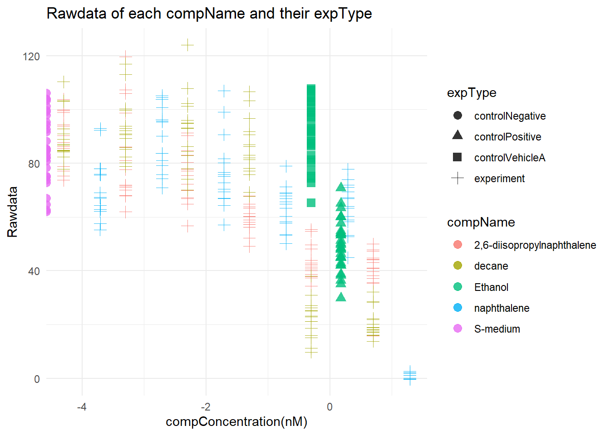

Chapter 2 C. elegans plate experiment analysis
2.1 Introduction
In this exercise we will read and analyze a data file. While analyzing the data we come across a few issues we try to fix. The data we’re gonna use in this exercise was derived from an experiment in which adult C.elegans were exposed to varying concentrations of different compounds. The variables RawData (the outcome - number of offspring counted as an integer value, after incubation time), compName (the generic name of the compound/chemical), the compConcentration (the concentration of the compound), and the expType are the most important variables in this dataset.
After we reviewed the Excel File. We see in the Excel file that there is no data in the colomns ‘plateRow’ en ‘plateColmn’. Some colomns arent nesecerasy like ‘expDate’, ‘expResearcher’, ‘expTime’, ‘éxpUnit’. This kind of information is metadata and should not be in your rawdata. It makes the table cluttered and information less easy to find. Some data in colomn is the same for all coditions, like ‘compDelivery’ and ‘bacterialStrain’. This kind of information is metadata and shouldn’t be in your table.
after reviewing the file we want to open the excel file in R using the {readxl} package.
library(tidyverse) #load in tidyverse package
library(readxl) #load in readxl package
data <- read_excel("CE.LIQ.FLOW.062_Tidydata.xlsx") #load in the data that we want to use for this assignmentBefore we go ahead an start analyzing our data. We’re gonna inspect the following colomns: “Rawdata”, “compName” and “compConcentration”
head(data[c('RawData', 'compName', 'compConcentration')]) #we want to see the first few lines of the colomns RawData compName and compConcentration## # A tibble: 6 × 3
## RawData compName compConcentration
## <dbl> <chr> <chr>
## 1 44 2,6-diisopropylnaphthalene 4.99
## 2 37 2,6-diisopropylnaphthalene 4.99
## 3 45 2,6-diisopropylnaphthalene 4.99
## 4 47 2,6-diisopropylnaphthalene 4.99
## 5 41 2,6-diisopropylnaphthalene 4.99
## 6 35 2,6-diisopropylnaphthalene 4.99The colomn ‘Rawdata’ is a “dbl” type, this is what we expected. The colomn ‘compName’ is a “chr” type, this is what we expected . The colomn ‘compConcentration’ is a “chr” type, this is not correct since they are only numbers in the colomn.
We’re gonna make a scatterplot for the data. As you can see in the code below we put the “compConcentration” on the x-axis, the “Rawdata” counts on the y-axis. For each level in “compName” we assign a colour and for each level in “expType” we assign a different symbol.
library(tidyverse) #load in the tidyverse data
ggplot(data = data, aes(x = compConcentration, y = RawData )) +
geom_point(aes(color = compName,
shape = expType)) #scatterplot for the different compounds and the varying concentrationsWe just made a scatterplot with the data from the excel file we imported earlier. Each compName has its own colour and each expType has its own shape, but we see one big problem. As we can see is the x-axis not very readable, actually not at all!
when we imported the Excel file, the colomn ‘compConcentration’ had a charachter type. Because of this every single charachter in each cell was shown on the x-axis and the numbers weren’t rounded. This explains why the x-axis wasn’t readable.
To correct this mistake, we’re gonna change the type of the colomn “compConcentration” from “chr” to “dbl”.
data$compConcentration <- as.numeric(data$compConcentration) #change the type of the colomn from <chr> to <dbl>
library(tidyverse) #load in tidyverse package
ggplot(data = data, aes(x = log10(compConcentration), y = RawData)) +
geom_jitter(aes(color = compName,
shape = expType),
size = 3,alpha = 0.8) +
labs(title = "Rawdata of each compName and their expType",
y = "Rawdata",
x = "compConcentration(nM)") +
theme_minimal() #scatterplot of the data with fixed x-axis and jitter
As we van see the x-axis is now readable.
We see in the scatterplot that the positive control for this experiments is Ethanol. The negative control for this experiment is S-medium.
if we really want to compare the different between the compund and experiments type. We need to normalize the data for the Negative control. We normalize the data by setting the mean value for the “controlNegative” to 1. All the other values are expressed as a fraction thereof.
library(tidyverse)
data_df <- as.data.frame(data)
controlnegative_mean <- mean(data_df$RawData[data_df$compVehicle == "controlNegative"]) #calculate mean of the control negative
data_df$data_norm <- data_df$RawData/controlnegative_mean
ggplot(data = data_df, aes(x = log10(compConcentration), y = data_norm)) +
geom_jitter(aes(color = compName,
shape = expType),
size = 1.5,alpha = 0.8, width = 0.2) +
labs(title = "Rawdata of each compName and their expType",
y = "Rawdata normalized",
x = "compConcentration(nM)") +
theme_minimal() #scatterplot of the data with fixed x-axis and jitterIn the dataset we used for this analysis, each compound has his own concentrations. If we want make the data more comparable we have to normalize the data.
2.2 analyzing plan
If we want to analyze the data to learn whether there is indeed an effect of different concentrations on offspring count and whether the different compounds have a different curve(ic50), First we need to get the data and prepare it. We did this already as you can see above.
after preparing the data we will perform the shapiro.test for every compound to check if the data (Rawdata) is normally distributed. All compounds need to have a p-value greater than 0.05.
To test if there is a significant difference between compound concentrations we can use the one sample t-test for each compound individually. To do this we have to filter the table for the compound we want to test first before we perform the test.
To compare the IC50 of each compound we can use the {drc} package to visualize the different curves for each compound.